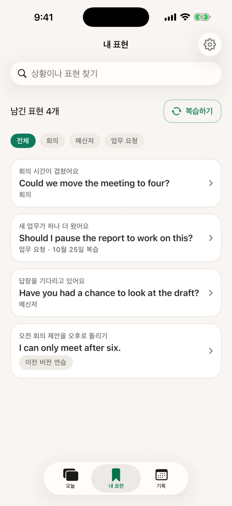
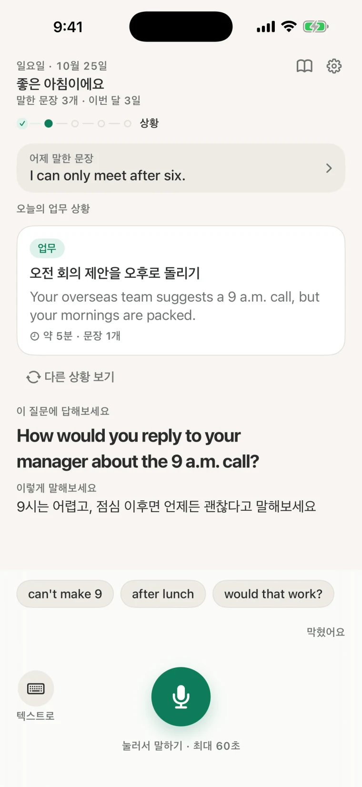
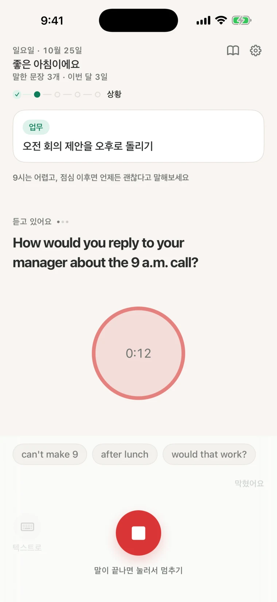
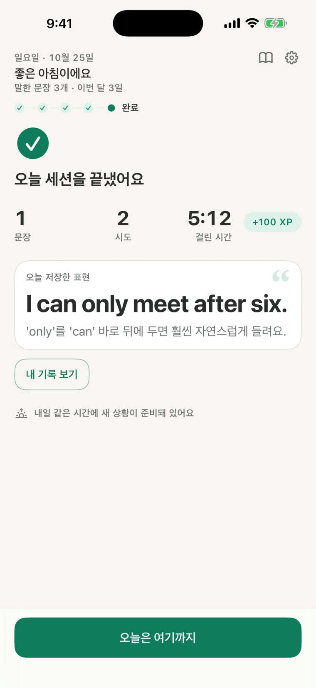
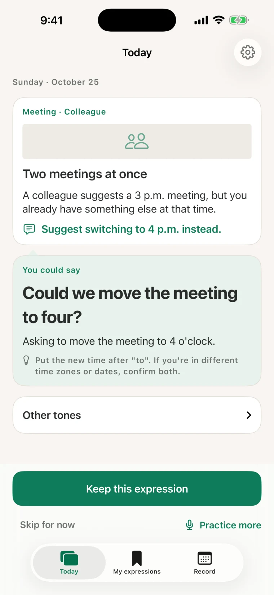

출근영어 — 소리 없이 한 장부터 출퇴근길에 한 손으로 보는 영어 표현 카드
큰 결심 없이, 오늘 한 문장.

1.5 「기록」 탭이에요. 남긴 표현 수, 이번 달 공부한 날, 다시 확인한 표현 수를 볼 수 있어요.
영어 앱을 몇 번 깔았다 지운 적 있다면, 이번엔 카드 한 장만 봐요. 회의·메신저·업무 요청 상황을 보고 속으로 영어를 떠올린 뒤, 탭해서 표현 하나를 확인해요. 마음에 들면 남겨 두고, 「내 표현」에서 찾아 한 장부터 복습해요. 마이크·키보드·로그인·결제 없이 시작하고, 연속 기록 압박도 밀린 과제도 없어요.
새로 생겼어요
1.11과 1.12에서 생겼어요. 넘겨 보기 · 듣기 · 이번 주 목표는 체험이 끝나도 무료이고, 상황 대화는 무료로도 하루 1번 할 수 있어요.
넘겨 보기
남긴 표현을 한 장씩 넘겨 봐요
「내 표현」의 「넘겨 보기」를 누르면 남긴 표현이 카드로 한 장씩 나와요. 왼쪽으로 밀면 다음, 오른쪽으로 밀면 이전, 탭하면 뒤집혀요. 평가하지 않고 넘겨도 되고, 「알아요」 · 「다시 볼래요」는 누르고 싶을 때만 눌러요.
순서는 복습할 것 먼저 · 최근 남긴 순 · 섞기 중에 고르고, 상황과 영어 중 무엇을 먼저 볼지도 정할 수 있어요. 닫았다가 같은 날 다시 열면 보던 카드부터 이어서 봐요.
상황 대화
카드의 상황으로 짧게 주고받아요
카드 뒷면이나 카드 상세의 「이 상황으로 대화해 보기」를 누르면, 그 상황의 상대 역할을 하는 AI와 영어로 글을 주고받아요. 한 번에 최대 6번까지 답하고, 내가 쓴 문장 아래에 더 자연스러운 문장 한 줄과 이유가 붙어요. 막히면 「힌트」를 눌러요. 마치면 건질 표현을 골라 내 카드로 저장할 수 있어요.
상대는 실제 사람이 아니라 AI이고, 답은 서버에서 Anthropic의 Claude가 써요. 글로만 주고받고 마이크는 쓰지 않아요. 무료로는 하루 1번, 체험 중과 Pro는 하루 5번 대화할 수 있어요. 회사명이나 사람 이름은 넣지 마세요.
듣기
남긴 표현을 차례로 들어요
「내 표현」의 「듣기」를 누르면 남긴 표현을 상황 한 줄, 영어, 영어 한 번 더 순서로 읽어 줘요. 속도는 0.8× · 1.0× · 1.2× 중에 고르고, 상황 읽기와 반복은 끌 수 있어요. 끝까지 들으면 멈춰요.
재생을 눌렀을 때만 소리가 나요. 화면을 꺼도 이어지고, 잠금 화면이나 이어폰 버튼으로 멈추거나 넘길 수 있어요. iPhone에 내장된 음성으로 기기 안에서 읽어서 인터넷이 없어도 돼요.
이번 주 목표
이번 주 며칠 볼지, 원할 때만
「기록」 탭 위쪽에서 이번 주에 며칠 볼지 2 · 3 · 5 · 7일 중에 골라요. 카드를 확인하거나 복습 · 넘겨 보기 · 대화 · 듣기 중 하나라도 한 날을 하루로 세요.
기본은 꺼져 있어요. 연속 기록을 세지 않고, 안 본 날을 따로 표시하지 않아요. 주가 바뀌면 조용히 처음부터 다시 세요.
1.9와 1.10에서 달라진 것도 그대로예요. 내 카드 · 복습 · 모음집은 체험이 끝나도 무료로 써요.
내 카드 직접 만들기
회의에서 들은 표현, 직접 적어 둬요
「내 표현」의 +를 누르고 영어 표현과 뜻만 적으면 내 카드가 돼요. 상황 · 예문 · 주제는 원할 때만 적고, 인터넷 없이도 만들고 고치고 지울 수 있어요.
메일이나 대화를 붙여넣거나 사진을 고르면 영어 문장을 5개까지 찾아 줘요. 저장할 것만 골라 뜻을 적어요. 사진 속 글자는 iPhone 안에서 읽고, 사진은 저장하지 않아요.
복습 일정
남긴 표현이 며칠 간격으로 다시 와요
답을 본 뒤 기억났어요 · 헷갈렸어요 · 다시 볼래요 중에 직접 고르면, 그에 맞춰 다음에 볼 날이 정해져요. 다시 볼 날이 된 표현은 그날 오늘 탭의 「오늘 복습」에 나오고, 한 번에 1 · 3 · 5개 중 고른 만큼만 꺼내 드려요.
모음집
주제별로 골라 담아요
회의 · 전화와 메일 · 거절 · 일정 조율 · 보고 · 출장 · 협상 · 부탁 8가지 모음에서 원하는 표현만 내 카드로 가져와요. 한꺼번에 숙제가 되지 않게 하루에 조금씩 복습에 나와요.
알림
새 표현 알림과 복습 알림을 따로
두 알림의 시간 · 요일 · 개수를 따로 정하고, 오늘 하루나 일주일 동안 모두 멈출 수 있어요. 알림을 누르면 그 카드나 오늘 복습이 바로 열려요.
가벼워진 시작
첫 카드는 카드 한 장만
처음 열면 다른 안내 없이 카드 한 장만 보여요. 질문은 하는 일 · 영어가 필요한 순간 · 볼 시간 세 가지로 줄었고, 중간에 건너뛰어도 고른 답은 그대로 반영돼요. 알림 권한은 시간을 고르고 「알림 받고 시작하기」를 눌렀을 때만 물어요.
알림 · 홈 화면과 잠금 화면 위젯 · 카드 뒷면의 복사와 들어보기 · 월간 선반과 상황 지도 · 매주 월요일 제안 카드 3장은 그대로 있어요.
결심 대신 기록
한 장씩 본 것이 「기록」에 조용히 남아요.
남긴 표현
남긴 표현이 숫자로 남아요
「이 표현 남기기」를 누를 때마다 내 표현이 하나씩 늘어나요. 숫자를 누르면 그 목록이 바로 보여요.
이번 달 공부한 날
본 날은 달력 선반에 카드로 꽂혀요
그날 확인한 카드가 선반에 꽂혀요. 며칠 쉬어도 깎이는 건 없고, 본 날만 조용히 늘어나요.
다시 확인한 표현
복습한 표현도 따로 세요
가린 채 다시 떠올려 본 표현이 쌓여, 예전에 남긴 표현이 얼마나 남아 있는지 알 수 있어요.
한 장은 이렇게 봐요
-
상황 보고 속으로 떠올리기
회의·메신저·업무 요청 상황 하나와 하고 싶은 말이 보여요. 영어는 아직 가려져 있어요.

소리 없이
-
탭해서 표현 하나 확인
「표현 확인」을 누르면 대표 표현과 뜻, 팁 한 줄이 나와요. 다른 말투도 펼쳐 볼 수 있어요.

한 손으로
-
남기거나 넘기기
마음에 들면 남겨서 「내 표현」에 두고, 아니면 넘겨요. 「여기까지」 해도, 「한 장 더」 봐도 돼요.

한 장부터
마이크·키보드·로그인·결제가 필요 없어요. 며칠 쉬어도 밀리지 않아요.
내 상황 카드
준비된 카드에 없는 상황도 한 줄이면 돼요.
한 줄 적기
적은 상황이 표현 카드가 돼요
오늘 탭의 「+ 내 상황」에 "내일 고객에게 납기가 늦는다고 말해야 해요"처럼 한 줄만 적으면, 그 상황에 맞는 영어 표현 카드가 바로 만들어져요. 보는 방법은 다른 카드와 같고, 남기면 「내 표현」의 「내가 만든 상황」에 모여요.
체험 중에는 하루 3장, Pro는 하루 10장까지 만들 수 있어요. 회사명이나 사람 이름은 넣지 마세요.
처음 고르기
잘 모르겠으면 탭으로 골라요
첫 카드를 본 뒤 하는 일과 영어가 필요한 순간을 탭으로 고르면, 그 순간에 맞춘 첫 카드를 만들어 드려요. 중간에 건너뛰어도 그때까지 고른 답은 반영돼요.
이 첫 카드는 하루에 만들 수 있는 「내 상황」 카드 수에 들어가지 않아요. 만드는 동안 준비된 카드를 먼저 볼 수 있어요.
처음 시작은 이렇게
-
앱을 설치해요
계정·로그인·카드 등록이 필요 없고, 마이크 권한도 묻지 않아요.
-
한 장 보기
상황을 보고 속으로 떠올린 뒤 탭해서 표현 하나를 확인해요. 말하거나 적지 않아도 괜찮아요.
-
남기고, 내 표현에서 찾기
마음에 드는 표현은 남겨 두세요. 「내 표현」에서 검색하거나 회의·메신저·업무 요청으로 골라 다시 볼 수 있어요.
-
한 장부터 복습하고 기록 보기
「복습하기」로 남긴 표현을 가린 채 다시 떠올려요. 한 장만 해도 돼요. 본 날과 남긴 표현은 「기록」에 쌓여요.
더 연습하기: 말하거나 적어 보기
선택이에요. 카드에서 「더 연습하기」를 누르면 음성이나 텍스트로 답하고 AI 피드백을 받아요. 기본 카드에는 필요 없는 심화 연습이에요.

1상황
준비된 상황을 읽어요
오늘의 업무 상황 하나와 그에 대한 영어 질문이 이미 준비돼 있어요. 무엇을 공부할지 고르지 않아도 돼요.

2말하기 또는 텍스트
말하거나 적어서 답해요
음성으로 최대 60초까지 답해요. 말을 중간에 끊지 않고, 멈추는 시점은 사용자가 정해요. 지하철이나 사무실에서는 왼쪽의 '텍스트로' 버튼을 눌러 적어도 돼요.

3피드백
문장 하나와 팁 하나를 봐요
의도가 전달됐는지 먼저 알려주고, 자연스러운 문장 한 개와 왜 바뀌었는지 한 줄, 가장 영향이 큰 팁 한 개만 보여줘요. 달라진 부분만 표시해서 전체를 다시 읽지 않아도 돼요.
4다시 말하기
같은 뜻을 한 번 더 말해요
받은 문장을 참고해 같은 뜻을 한 번 더 말해봐요. 텍스트로 답했다면 한 번 더 적으면 돼요. 건너뛰고 바로 완료해도 괜찮아요.

5완료
저장한 표현을 확인하고 끝내요
오늘 저장한 표현 하나와 문장·시도·걸린 시간을 확인하고 끝나요. 「내 기록 보기」로 기록을 열어 볼 수 있고, 다음 날 같은 시간에 새 상황이 준비돼요. 연속 일수나 요일 빈칸 같은 압박 장치는 없어요.
스픽과 다른 점
좋은 앱들이 이미 많아요. 출근영어가 다르게 잡은 것은 세 가지예요.
하나
밀려도 조금씩
며칠 쉬어도 깎이는 건 없어요. 돌아오면 보던 카드 한 장부터 다시 보고, 다시 볼 표현이 밀려 있어도 복습은 한 번에 고른 개수(1 · 3 · 5개)만 꺼내 드려요.
둘
한 문장, 한 팁
틀린 곳을 한꺼번에 지적하지 않아요. 의도를 살린 자연스러운 문장 한 개와 가장 영향이 큰 팁 한 개만 드려요.
셋
14일은 전부 무료
계정도 카드 등록도 없이 14일 동안 모든 기능을 써 봐요. 체험이 끝나도 남긴 표현·기록·복습과 하루 카드 한 장은 무료로 남아요.
요금
14일 무료 체험
설치 후 14일
모든 기능을 무료로 써 봐요
- 카드 무제한, 내 상황 카드 하루 3장, AI 연습까지 전부
- Apple 결제나 카드 등록 없이 시작하고, 체험이 끝나도 자동으로 결제되지 않아요
체험이 끝난 뒤에도 무료
쌓은 것은 그대로 남아요
- 남긴 표현 · 검색 · 복습 · 기록은 계속 무료
- 새 카드는 하루 한 장씩 무료로 볼 수 있어요
Pro
월 6,900원 · 연 39,000원
- 카드 무제한, 내 상황 카드 하루 10장, AI 연습
- 연간은 월 3,250원꼴이에요. 월간·연간 모두 자동 갱신 구독이에요
- 체험이 끝난 뒤 하루 동안은 50%, 그 주 안에는 30% 할인된 가격으로 시작할 수 있어요
모든 가격과 할인은 앱 안 요금 화면에 표시돼요. 구독은 iPhone 설정 > Apple 계정 > 구독에서 언제든 해지할 수 있고, 갱신일 24시간 전까지 해지하면 다음 결제가 되지 않아요.
자주 묻는 질문
며칠 못 하면 어떻게 되나요?
깎이는 건 없어요. 연속 일수를 세지 않고, 돌아오면 보던 카드부터 이어서 봐요. 다시 볼 표현이 밀려 있어도 복습은 한 번에 고른 개수(1 · 3 · 5개)만 꺼내 드려요.
영어를 잘 못해도 되나요?
괜찮아요. 의도가 전달됐는지 먼저 확인하고, 고칠 곳은 한 가지만 알려줘요. 틀린 곳을 한꺼번에 지적하지 않아요.
말하기 어려운 자리에서는요?
기본은 소리 없이 보는 카드예요. 상황을 보고 속으로 떠올린 뒤 탭해서 표현을 확인하면 돼요. 말하거나 적어 보는 연습은 원할 때만 「더 연습하기」로 해요.
지하철에서도 되나요?
네. 마이크도 키보드도 필요 없어서 서서 가는 지하철에서도 한 손으로 카드를 넘길 수 있어요. 마음에 드는 표현은 남겨 두고 내 표현에서 다시 찾아요.
하루 5분으로 효과가 있나요?
한 장만 봐도 괜찮아요. 확인 전에 속으로 먼저 떠올려 보고, 남긴 표현은 내 표현의 「복습하기」로 가린 채 다시 떠올려 봐요. 복습도 한 장부터 할 수 있어요.
하루에 몇 장 볼 수 있나요?
설치 후 14일 체험과 Pro에서는 카드가 무제한이에요. 체험이 끝난 뒤 무료로는 하루 한 장씩 새 카드를 볼 수 있고, 남긴 표현·검색·복습·기록은 그대로 제한 없이 써요. 말하거나 적어서 피드백을 받는 AI 연습은 원할 때만 쓰는 선택 기능이에요.
녹음은 어디에 저장되나요?
기본 카드는 녹음하지 않아요. 선택 연습에서 말로 답하면 iPhone 안에서 Apple 음성 인식으로 텍스트가 되고, 음성 파일은 기기를 떠나지 않아요. 서버로는 텍스트만 가고, 피드백 문장은 Anthropic의 Claude가 써요.
무료 체험은 어떻게 시작되나요?
설치하면 바로 14일 체험이 시작돼요. Apple 결제나 카드 등록이 없어서, 체험이 끝나도 자동으로 결제되지 않아요. 체험 중에는 모든 기능을 쓸 수 있고, 내 상황 카드는 하루 3장까지 만들 수 있어요.
체험이 끝나면 어떻게 되나요?
남긴 표현·기록·복습과 하루 카드 한 장은 계속 무료예요. 내 상황 카드와 AI 연습을 이어 쓰려면 Pro(월 6,900원 또는 연 39,000원, 자동 갱신)를 시작하면 돼요. 체험이 끝난 뒤 하루 동안은 50%, 그 주 안에는 30% 할인된 가격으로 시작할 수 있고, 그 뒤에는 정가예요. 모든 가격과 할인은 앱 안 요금 화면에 표시돼요.
구독은 어떻게 해지하나요?
iPhone 설정 > Apple 계정 > 구독에서 언제든 해지할 수 있어요. 갱신일 24시간 전까지 해지하면 다음 결제가 되지 않고, 이미 결제한 기간은 끝날 때까지 쓸 수 있어요. 결제는 Apple이 처리하고, 앱 설정에서 구매를 복원할 수 있어요.
내 상황 카드에 적은 글은 어떻게 쓰이나요?
적은 글은 카드를 만들기 위해 서버로 보내지고, 표현은 Anthropic의 Claude가 써요. 글은 익명 기기 ID 아래 저장되고 약 한 달 안에(늦어도 37일) 지워지며, 만들어진 카드만 내 기록으로 남아요. 앱의 「내 데이터 삭제」를 누르면 바로 전부 지워져요. 회사명이나 사람 이름은 넣지 마세요.
알림은 어떻게 오나요?
처음 시작할 때나 설정에서 출근길 08:30 · 점심 12:30 · 퇴근길 18:30 중에 고르거나 직접 시간을 정하면, 그 시간에 오늘 카드의 상황이 알림으로 와요. 알림에는 영어를 싣지 않고, 탭하면 그 카드가 바로 열려요. 일요일 저녁에는 이번 주 돌아보기가 와요. 알림은 iPhone 안에서 예약되고, 서버에서 보내는 푸시는 없어요. 시간은 설정에서 언제든 바꿀 수 있어요.
위젯에 영어가 보이나요?
아니요. 위젯에는 오늘 카드의 상황과 남긴 표현 같은 누적 숫자만 보여요. 영어 표현은 위젯을 탭해 앱에서 카드를 열었을 때만 보여 드려요.
내가 만든 카드는 어디에 저장되나요?
이 iPhone에 저장되고, 이 기기의 익명 ID 아래 서버에도 보관돼요. 계정이 없어서 이름이나 이메일과는 연결되지 않아요. 카드는 인터넷 없이도 만들고 고칠 수 있고, 서버에는 연결될 때 올라가요. 지운 카드는 서버에서도 내용이 지워지고, 「내 데이터 삭제」를 누르면 기기와 서버에서 전부 지워져요. 다만 앱을 다시 설치하거나 휴대폰을 바꾸면 돌아오지 않을 수 있어요.
복습은 어떻게 정해지나요?
남긴 표현과 내가 만든 카드는 며칠 간격으로 다시 나와요. 답을 본 뒤 기억났어요 · 헷갈렸어요 · 다시 볼래요 중에서 직접 고르면, 기억났어요는 다음 복습까지 간격이 1일 → 3일 → 7일 → 14일 → 30일로 늘고, 헷갈렸어요와 다시 볼래요는 다음 날 다시 나와요. 다시 볼래요를 고른 카드는 그 복습 끝에 한 번 더 보여 드려요. 다시 볼 날이 된 표현은 그날 오늘 탭의 「오늘 복습」에 나오고, 복습 알림에서 요일을 골랐다면 그 요일에 나와요.
사진은 서버로 올라가나요?
아니요. 사진 속 글자는 iPhone에 내장된 Apple 문자 인식으로 기기 안에서 읽고, 사진과 읽은 글은 서버로 보내지도 저장하지도 않아요. 가져오기 화면을 닫으면 사라져요. 붙여넣은 글도 같아요. 그중 저장하기로 고른 문장만 내 카드가 되고, 내 카드는 이 기기와 서버(익명 기기 ID 아래)에 보관돼요.
상황 대화의 상대는 실제 사람인가요?
아니요. 상대는 AI예요. 카드의 상황에 맞춰 서버에서 Anthropic의 Claude가 답을 쓰고, 대화 화면에도 AI 상대라고 표시돼요. 대화는 글로만 주고받고, 앱은 마이크를 쓰지 않아요. 주고받은 글은 익명 기기 ID 아래 저장되고 약 한 달 안에(늦어도 37일) 지워져요.
상황 대화는 하루에 몇 번 할 수 있나요?
무료로는 하루 1번, 체험 중과 Pro는 하루 5번 대화할 수 있어요. 대화 한 번에 최대 6번까지 답할 수 있고, 「여기까지」를 누르면 언제든 마칠 수 있어요.
듣기는 인터넷이 필요한가요?
아니요. iPhone에 내장된 음성으로 기기 안에서 읽어서 인터넷 없이도 돼요. 재생을 눌렀을 때만 소리가 나고, 화면을 꺼도 이어서 들을 수 있어요. 들은 표현은 서버로 보내지 않고, 복습 일정에도 영향을 주지 않아요.
이번 주 목표는 연속 기록을 세나요?
아니요. 이번 주에 카드를 본 날만 세고, 연속 기록이나 안 본 날은 표시하지 않아요. 주가 바뀌면 조용히 처음부터 다시 세요. 기본은 꺼져 있고, 「기록」 탭에서 정하거나 끌 수 있어요. 목표는 이 iPhone에만 저장돼요.
개인정보
- 기본 카드는 녹음도 입력도 없어요. 선택 연습에서 말로 답하면 iPhone 안에서 텍스트로 바뀌고, 음성 파일은 서버로 보내지 않아요.
- 내 상황에 적은 글은 약 한 달 안에(늦어도 37일) 지워져요. 카드를 만드는 데만 쓰고, 만들어진 카드만 내 기록으로 남아요. 회사명이나 사람 이름은 넣지 마세요.
- 계정도 로그인도 없어요. 기록은 기기에서 만든 익명 기기 ID 하나로만 구분해요.
- 알림과 위젯은 기기 안에서 만들어져요. 알림은 iPhone 안에서 예약되고, 위젯은 기기 안에 적어 둔 오늘 카드 요약만 읽어요. 영어 표현은 알림과 위젯에 나오지 않아요.
- 내가 만든 카드는 서버에도 보관돼요. 계정 없이 이 기기의 익명 ID 아래 보관하고, 사진 속 글자는 iPhone 안에서만 읽어요. 앱을 다시 설치하거나 휴대폰을 바꾸면 돌아오지 않을 수 있어요.
- 상황 대화에서 주고받은 글은 약 한 달 안에(늦어도 37일) 지워져요. 답을 만들기 위해 서버로 보내지고 Anthropic의 Claude가 처리해요. 듣기와 이번 주 목표는 이 iPhone 안에서만 처리돼요.
- 언제든 지울 수 있어요. 앱의 '내 데이터 삭제'를 누르면 서버 기록이 즉시 전부 삭제돼요.
English
출근영어 (Workday English) is a silent, one-handed English expression-card app for Korean office workers' commutes: start with a single card, no microphone, keyboard or sign-in needed.

- See a work situation, recall the English in your head, tap to reveal one expression, then keep it or skip it. Find kept expressions in My Expressions, review from a single card, and watch your record grow.
- No big resolution. One sentence a day, and a record that grows.
- Nothing is taken away. Take a few days off and you resume with the card you were on; reviews that waited come a few at a time (1, 3 or 5, as you set).
- My situation: write one line ("I have to tell a client the delivery will be late") and a card with the English for exactly that situation is made for you. After your first card, pick your job and the moments you need English, and first cards are made for those moments; skip at any step and what you picked is kept. These first cards do not count toward the daily My situation limit.
- New in 1.9 and 1.10: make your own card with just the English and its meaning (offline; edit or delete any time), or pick up to five English lines from a photo or pasted text; the photo is read on the iPhone and not kept. Kept expressions and your own cards come back after a few days: after the answer you choose I remembered it, I wasn't sure or Show it again, and that sets the next day. Bring in cards from 8 topic collections, a few a day. New-expression and review reminders have their own times, days and amounts, and you can pause them all. The first card now comes alone, onboarding asks three questions, and notification permission is asked only when you tap Get reminders and start. Your cards, review and collections stay free after the trial.
- New in 1.11 and 1.12: Flip through shows your kept expressions one card at a time; swipe left for the next, right for the previous, and tap to turn a card over. Rating it (I know it, Show it again) is optional. Situation chat (Try this situation as a conversation, on the back of a card or in a card's detail) is a short written conversation in English with an AI counterpart, not a real person, about that card's situation: up to six replies, a more natural version of each of your lines, and at the end you can save what you want as your own cards. It is text only and the app does not use the microphone; free users get one a day, the trial and Pro five a day. Listen aloud reads your kept expressions with the iPhone's built-in voice, offline; it plays only when you press play and keeps going with the screen off. This week's goal lets you pick how many days to open the app this week (2, 3, 5 or 7); it is off by default, counts no streaks and marks no missed days.
- Notifications: pick commute 08:30, lunch 12:30, the way home 18:30 or your own time, and the situation of today's card arrives as a notification, without the English; tap it to open that card. A look-back of the week arrives on Sunday evening and can be saved or shared as an image. Notifications are scheduled on the iPhone, not pushed from a server. Home Screen and Lock Screen widgets show today's card and your running totals, never the English.
- Kept cards pile up in My Expressions and a drawer slot fills every 10; the numbers in your record only go up. A monthly shelf and a map of 8 situation types show what you have seen. On the back of a card you can copy the expression, listen to it with the iPhone's built-in voice (offline) and mark "I used it". Each Monday three "Situations you might meet" cards arrive, and there are now 120 situation cards.
- AI practice (answer by voice or text and get feedback) is an optional deep-dive under Practice more; the cards never need it.
- Pricing: every feature is free for 14 days after install, with no Apple payment and no automatic charge when it ends. After the trial, kept expressions, your record, review and one card a day stay free. Pro (KRW 6,900 a month or KRW 39,000 a year, auto-renewing) adds unlimited cards, up to 10 situation cards a day and AI practice; right after the trial it starts at 50% off for a day, or 30% off that week. All prices are shown on the plans screen in the app. Cancel any time in Settings > Apple Account > Subscriptions.
- Text you write for My situation is stored with the anonymous device ID, sent to Anthropic's Claude to write the card, and deleted from the server within about a month (37 days at the latest). Leave out company and people's names.
- Cards you make are kept on the iPhone and on our server under the anonymous device ID, with no account. Reinstalling the app or changing phones may not bring them back.
- In Situation chat, the lines you write and the AI's replies are sent to our server and processed by Anthropic's Claude to write the replies. They are stored under the anonymous device ID only and deleted within about a month (37 days at the latest). Listen and This week's goal stay on the iPhone.
- In optional practice, speech is transcribed on the iPhone by Apple's speech recognition, and the audio never leaves the device. Only the text is sent to the server, where the feedback is written by Anthropic's Claude. There is no account or sign-in — records are tied to an anonymous device ID and can be deleted from the app.
- The interface is available in Korean and English, among other languages. The practice question and the model sentence are always in English.
See Support and the Privacy Policy for details. Download 출근영어 on the App Store.